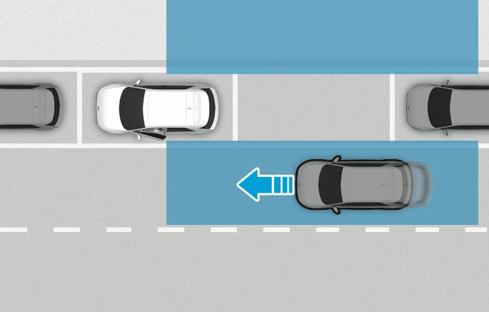
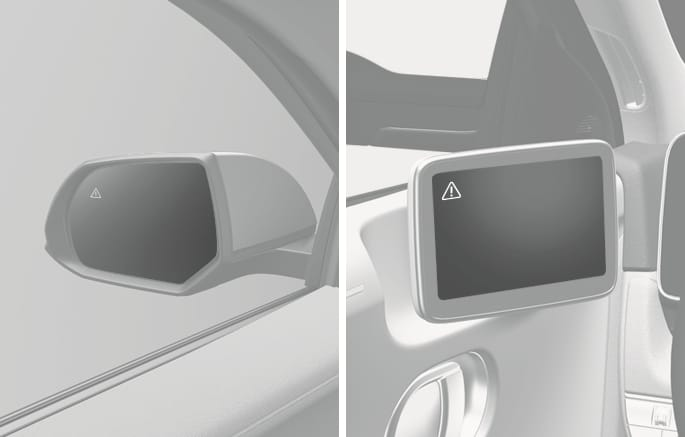

안전 하차 경고 (SEW)

2C_SEWOperation
안전 하차 경고는 하차 시 후측방의 차량을 인식하여 충돌 위험이 판단되면 경고문과 경고음을 통해 알려줍니다.
-
SEW는 Safety Exit Warning의 약자입니다.
-
사이드 미러 경고등이 깜빡이고 경고문과 경고음을 통해 충돌 경고를 알립니다.

2C_SideMirrorWaringLamp
설정 메뉴에서 선택 해제하여 기능을 끌 수 있으나, 이 경우 안전 하차 경고의 도움을 받을 수 없습니다. 항상 주의하여 운전하십시오.